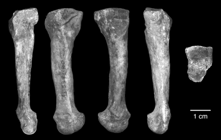

| Feature Article - March 2011 |
| by Do-While Jones |
A newly discovered bone brings Australopithecus afarensis back into the news.
A new chapter is being added to a story that's 25 years old. We've written several articles about this story in the past. In case you haven't read them, here's a brief summary.
Twenty-five years ago, Mary Leaky discovered some footprints which are, by all accounts, indistinguishable from modern human footprints. If they had been found in fresh cement, there would have been no question that they were made by bare-footed people. But they weren't found in fresh cement. They were found in rocks that evolutionists believe are 3.5 million years old. Any evolutionist will tell you that modern humans had not evolved 3.5 million years ago. Who could have made these footprints?
One obvious possibility is that the rocks containing the footprints aren't really 3.5 million years old. Evolutionists won't even consider this possibility--but we will in the sidebar following this article.
According to the evolutionists' timeline, the only primate in existence at the time was Australopithecus afarensis. The species name means "southern ape from the Afar region of Africa." The best known skeleton of this species is nicknamed Lucy because the Beatles' song, Lucy in the Sky with Diamonds, was playing on the radio when she was discovered. Therefore, it is believed by some evolutionists that the footprints were made by one of Lucy's species.
This leads some people to the conclusion that upright posture had evolved in A. afarensis. But analysis of her pelvis suggested that she could not have walked upright. So evolutionists have argued among themselves about this for years.
Of course, the obvious thing to do would be to examine Lucy's foot bones to see if she could have made the footprints. That was never done because Lucy's skeleton, although remarkably complete, didn't include any foot bones. They were never discovered. (Or, perhaps they were discovered, but they looked so much like ape foot bones that they weren't associated with Lucy's skeleton.)
A new fossil has just added another chapter to Lucy's story.
|
One of the earliest human ancestors had human-like foot arches that would have allowed it to walk effectively on two legs. The finding may help to resolve the debate about whether this species, Australopithecus afarensis, was completely adapted to terrestrial bipedalism or retained the ape-like ability to climb in the trees. Carol Ward at the University of Missouri in Columbia and her team analysed a fossilized bone about 3.2 million years old from Ethiopia. The fossil, the fourth metatarsal, is one of the bones that makes up the mid-foot. In flat-footed, tree-climbing chimpanzees, the bone lies flat against the ground, whereas in humans it is twisted and angled -- an indicator of stiff, arched feet well adapted for walking with a human-like stride. The A. afarensis bone was twisted and angled similarly to its modern human equivalent. 1 |
|
The transition to full-time terrestrial bipedality is a hallmark of human evolution. A key correlate of human bipedalism is the development of longitudinal and transverse arches of the foot that provide a rigid propulsive lever and critical shock absorption during striding bipedal gait. Evidence for arches in the earliest well-known Australopithecus species, A. afarensis, has long been debated. A complete fourth metatarsal of A. afarensis was recently discovered at Hadar, Ethiopia. It exhibits torsion of the head relative to the base, a direct correlate of a transverse arch in humans. The orientation of the proximal and distal ends of the bone reflects a longitudinal arch. Further, the deep, flat base and tarsal facets imply that its midfoot had no ape-like midtarsal break. These features show that the A. afarensis foot was functionally like that of modern humans and support the hypothesis that this species was a committed terrestrial biped. 2 |
"Full-time terrestrial bipedality" means, "normally walking on two feet on the land, rather than swinging from trees." This method of locomotion is said to be, "a hallmark of human evolution". This gives us some insight into the mind of a typical evolutionist.
Suppose you ask a biologist about the difference between a tiger and a leopard, or the difference between a horse and a mule. The biologist will consider the differences and similarities and come up with some criteria for distinguishing one from the other.
If you ask an evolutionist what the difference is between a human and an ape, he does the same thing. Apes have smaller brains, more hair, and can't easily walk upright. Therefore, humanity is defined (at least in part) by the way the creature walks. If it walked upright, it was at least partly human. That's why it is vitally important to evolutionists to determine if A. afarensis walked upright. That's why it "has long been debated."
Carol Ward found a bone named "AL 333-160" ten years ago that she says proves A. afarensis walked upright. After a decade of studying this one bone, the results were published last month.
|
Here we describe AL 333-160, a complete, nearly perfectly preserved fourth metatarsal of A. afarensis from Hadar, Ethiopia (Fig. 1). This specimen was recovered from the Hadar locality AL 333 in 2000 during sieving of eroded Denen Dora 2 submember surface deposits of the Hadar Formation. Since 1975, these deposits at the 333 locality have yielded more than 250 hominin fossils that eroded from an in situ horizon dated to ~3.2 million years ago. We assign AL 333-160 to A. afarensis, the only hominin species in an assemblage of >370 hominin specimens so far recovered from the Hadar Formation. Other partial metatarsals attributed to A. afarensis are known from Hadar, but none is complete enough to address the question of pedal arches. 3 |
Her "Fig. 1" is this picture of that one bone, viewed from five different angles.
|
 |
Two questions immediately come to mind. The first is, "How does she know it is the fourth (not third) metatarsal?" The second is, "How does she know it came from A. afarensis?"
Remember, Lucy's skeleton did not include any foot bones. We showed you her skeleton in the February, 2000, newsletter. 4 We also showed you the one partial foot bone found with the skeleton nicknamed, "Little Lucy." 5 They have discovered "other partial metatarsals attributed to A. afarensis." In other words, they have found pieces of foot bones that they think MIGHT belong to A. afarensis. They don't really have any other foot bones to compare it to.
They did not find this bone next to a first, second, and third metatarsal. So, how do they know it is a fourth metatarsal? How do they know what a fourth metatarsal really looks like?
These are not rhetorical questions. They are real questions, with one real answer. The answer is, "prejudice."
Let's not lose sight of the historical reason why evolutionists care about this foot bone. It came from the same geologic layer as the layer containing some human footprints. Evolutionists believe modern humans could not have made the footprints because modern humans hadn't evolved yet. The footprints had to have been made by Lucy's species because that's the only hominid that had evolved at that time. Therefore, Lucy's foot had to look just like a modern human foot.
This bone looks just like a modern human fourth metatarsal--but they believe it could not be a modern human metatarsal because "modern humans hadn't evolved yet."
How do evolutionists know modern humans had not evolved yet? Because no modern human bones have ever been found in this layer of rock. If a modern human bone was found in this layer, it would disprove evolution. Therefore, this foot bone can't be modern no matter how modern it looks! That's why no modern bones have been found in this layer!
This brings us back to our second question. "How does Carol Ward know it came from A. afarensis?" It looks just like a modern human fourth metatarsal, but it could not be from a modern human because that would disprove evolution. All the previous bones found in this layer have been assigned to "A. afarensis, the only hominin species in an assemblage of >370 hominin specimens so far recovered from the Hadar Formation." They are assumed to have come from A. afarensis because earlier species had gone extinct by then, and later species hadn't evolved yet.
We hope you realize the obvious error in this logic. The fossil bone has been analyzed based on the assumption of the evolutionary timeline, and then used as proof of the evolutionary timeline.
Suppose Ward had been one of the evolutionists who say that, based on pelvic and shoulder anatomy, Lucy did not walk upright. How would she have interpreted her discovery?
In that case, she would have "known" that the bone could not have come from A. afarensis because it is clearly a foot bone from a creature that walked upright. This bone (which is unlike any other previously discovered A. afarensis foot bone) must have come from another, previously unknown hominid species. Not only has she discovered an entirely new hominid, she has discovered the hominid species that made the Laetoli footprints! This metatarsal would have been the "type specimen" for an entirely new species discovered by Carol Ward!
We are admittedly prone to humorous exaggeration from time to time, but let us remind you that new species have been named and accepted by the scientific community based on even less fossil evidence. We would like to refer you back to an earlier article in which we showed you the type specimens for Eosimias. 6
The facts are that Carol Ward found an isolated bone that looks just like a modern human metatarsal. Since they believe it came from a rock layer that formed before humans evolved, they believe it must have come from A. afarensis rather than a modern human.
A more reasonable conclusion is that this modern-looking foot bone came from a modern human, just like one of the modern humans who made the Laetoli footprints.
| Quick links to | |||
|---|---|---|---|
| Science Against Evolution Home Page |
Back issues of Disclosure (our newsletter) |
Web Site of the Month |
Topical Index |
Footnotes:
1
Nature, 17 February 2011, "Paleontology: Bones made for walking", page 309, http://www.nature.com/nature/journal/v470/n7334/full/470309b.html
2
Ward, Kimbel, and Donald C. Johanson, Science, 11 Feb 2011, "Complete Fourth Metatarsal and Arches in the Foot of Australopithecus afarensis", pp. 750-753, http://www.sciencemag.org/content/331/6018/750.full
3
ibid.
4
Disclosure, February 2000, "Let's Talk About Lucy", http://www.scienceagainstevolution.org/v4i5f.htm
5
Disclosure, October 2006, "Little Lucy", http://www.scienceagainstevolution.org/v11i1f.htm
6
Disclosure, September 2001, "Parent of the Apes - Part 1", http://www.scienceagainstevolution.org/v5i12f.htm